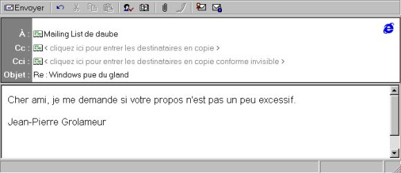
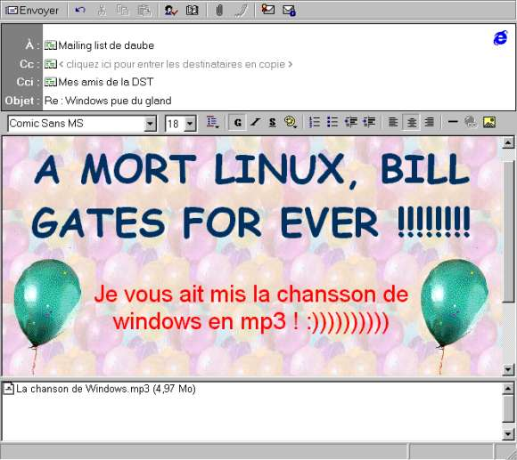

Tu as pourri IRC à grand coup de nuke ? Tu as deshonnoré le Web avec ta homepage de merde ? Bravo. Mais maintenant, tu t'ennuyes. Ne panique pas, il reste encore plein d'endroit ou tu pourras exprimer ton c0wb0yZ spiRiT.La Netiquette, tu te la tailles en pointe.On l'avait déjà appris en regardant TF1 : les newsgroups ne sont qu'un repère de terroristes pédophiles qui échangent des images de fillettes nues en train de fabriquer des bombes à effet de souffle. Certes. Mais c'est aussi un formidable moyen pour se faire plein d'amis c0wb0yZ. Nous allons étudier quelques techniques, très répandues, qui feront de toi un vrai utilisateur d'Usenet ou de Mailing List1- moi aussi Le fameux "me too" (moi aussi) semble avoir été introduit par des c0wb0yZ d'AOL il y a quelques années. La méthode est simple, mais incroyablement efficace. Il s'agit de repérer un message bien long dans lequel un utilisateur exprime son avis sur un sujet dont tout le monde se tape. Par exemple, dans fr.bio.explosions le professeur Bidule fait un exposé de 1500 lignes sur les déformations craniennes que peuvent subir des tites filles à poil si on leur fait péter une bombe à fragmentation en pleine gueule et qu'ensuite, on leur fracasse la tête avec une batte de base-ball en bronze ((c) Parker) pendant qu'elles agonisent à terre. Bon, c'est juste un exemple hein. Il faudra alors poster dans ce forum l'intégralité du texte suivi d'un "je suis d'accord avec l'auteur". Et voila. Bien évidemment, on peut combiner la technique du "me too" avec celle du crosspost, qui consiste a balancer ses post sur 30 newsgroup differents et si possible sans aucun rapport entre eux, pour ensuite recevoir 5000 mails de félicitations de la part de tout Usenet. 2- Faire chier une mailing list Poster une grosse connerie dans un mailing list, c'est bien. Poster une grosse connerie, avec en plus un attach de 3mo et du HTML de partout, c'est mieux. Nous allons étudier un exemple pour voir ce que ca donne. Imaginons que tu reponds à un mail qui dit "Linux c'est genial, Windaube c'est pourri, Linux fUX M$ !!". C'est le genre de mail constructif qui exige une réponse. Voila ce que répondrait un gros lamer :  Toi, tu es une vraie elite, alors ca suffit de genre de mail à deux balles, maintenant faut tout faire péter : HTML de folie, un fichier débile de 5mo et encore plein d'arguments vachement subtils, ca devrait faire passer l'envie à l'autre grosse lame de dire du mal de Winleet. Voila la réponse que je peux te conseiller :  L'effet de ce genre de merde sur un client mail en mode texte est assez phénomenal, et je vous garanti que vous allez vous faire plein de copain parmi les abonnés d'Infonie, qui ont tous lu "Le mail en HTML pour les Nuls". Je ne sais pas si il est possible d'inclure des gif animés dans le HTML des mails, mais je compte sur vous pour tester ca. Ca serait l'apothéose. Ce genre de mail se fait en 30 secondes avec Outlok Express, et c'est donc l'outil que je recommande pour tous les trous du cul désirant se lancer dans les Mailing List. Attention, ceci n'est qu'un exemple, il ne faut pas s'empecher de pousser un peu plus loin. Par exemple, 5mo, ca fait un peu pauvre, pour vraiment bloquer une Mailing List, il faut compter dans les 10-15 mo. Enfin, pourquoi ne pas envoyer sa carte de visite en attach à chaque mail ?? Outlook, décidemment à la pointe de la technologie, nous propose cette option, qu'il ne faudra pas oublier de cocher pour alourdir encore ses mails de quelques ko. C'est avec les petits kilo-octets qu'on fait les gros lags. 3- siGNaTuRe Si il y a bien quelque chose qui permet de connaitre l'esprit d'un internaute, c'est sa signature e-mail. En tant que c0wb0yz, tu ne peux pas te permettre d'avoir la signature de monsieur tout-le-monde. Il faut faire sentir à tes correspondants cette hacking touch qui caracterise ton esprit. Il existe differents types de signatures utilisables. Certaines sont destinées à la frange hardcore des c0wb0yz, d'autres sont plutot faites pour les trous du cul moderés. En tout cas, elles te feront toutes passer pour un beau crétin. Les signatures "Mon ordinateur à moi": ----------------------------------------- Patrick Trouduku : trouduc@infonie.fr Pentium II 300mhz 32moSDRAM 512kb/cache DD 3.8 Go Quantum SCSI CDROM 32X pionneer Ecran 17' Sony Trinitron (pitch 0.25) Souris Logitech, clavier Mitsumi OS : win95, Linux (vive linux) Peugeot 406 (diesel) aileron arriere Autoradio Pionneer RDS MegaBass 2x200 Watt ------------------------------------------ *** Pierre Ducon (ducon@info.univ-pourrie.fr) Sparc Ultra & 3com w/ Ethernet 15mbs Solaris 4.3.54.2.0.2 Sexe : 38 centimetres ***La famille Boulet sur le Net: www (O o) -------------.oOO--(_)--OOo.-------------- Famille Boulet notre mel : boulet@infonie.fr Web : www.infonie.fr/~boulet ICQ : 1240657 Pow-Wow : 234345 Yahoo Pager : 3400345 Tel : 08-43-55-92-31 Fax : 03-03-34-87-22 Minitel : 36 15 Boulet Police/pompier : 18 7+14 : 21 ------------------------------------------La signature "Generation Linux": .............................. Ludovic Dugland e-mail : lud0@linux-4-ever.org A MORT WINDAUBE !!!!!!!!!!!! Software is like sex, it's better when it's free. - Linus Torvalds .............................. (This .sig has been generated by Outlook Express 98)Enfin, il existe de nombreux petits dessins ascii qui ajouteront une touche particulière à ta signature. Il ne faut surtout pas oublier non plus la petite citation. En général, elle devra être tirée de StarWars (les phrases de Yoda ou de Ian Solo semblent être les plus populaires). Dans tous mes mails, je mets la célebre phrase de Ian Solo : "Leia est très belle, mais elle a des verues plein les pieds". 88888888888 `Y8888888Y' `Y888Y' `Y' |